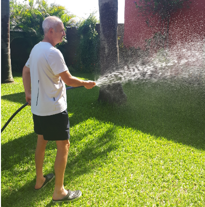

Desde que tengo memoria mi papa esta siempre pendiente de su patio, de darle todo lo que necesita.
Corta el cesped, riega, fertiliza las plantas, las transplanta, las cuida del sol, de la helada.
Yo nunca habia logrado conectar con eso, lo veia y decia, hu cuanto sacrificio! y el siempre haciendolo con tanto amor.
Cada vez que venia gente a casa lo mostraba tan feliz. Años despues, al volver a casa, ir a ese patio me trae muchos recuerdos, tantas charlas que se dieron ahi. Tantos momentos con la flia, fiestas de cumpleaños, navidades, años nuevos
Hoy en dia, viviendo en un departamento, siento la falta de ese verde. De la brisa de verano, de mirar por la ventana y ver algo mas que puro concreto, de sentarme en una reposera y escuchar el ruidito de las hojas, de los pajaritos, etc.
Hoy en dia, viviendo en un departamento, siento la falta de ese verde. De la brisa de verano, de mirar por la ventana y ver algo mas que puro concreto, de sentarme en una reposera y escuchar el ruidito de las hojas, de los pajaritos, etc.
Hoy en dia, viviendo en un departamento, siento la falta de ese verde. De la brisa de verano, de mirar por la ventana y ver algo mas que puro concreto, de sentarme en una reposera y escuchar el ruidito de las hojas, de los pajaritos, etc.
Hoy en dia, viviendo en un departamento, siento la falta de ese verde. De la brisa de verano, de mirar por la ventana y ver algo mas que puro concreto, de sentarme en una reposera y escuchar el ruidito de las hojas, de los pajaritos, etc.
Asi que gracias pa por enseñarme tanto!